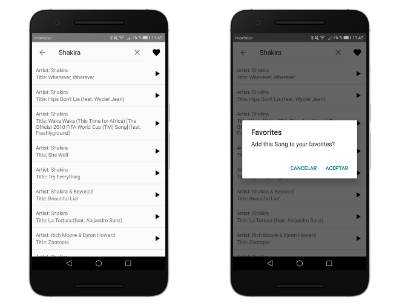
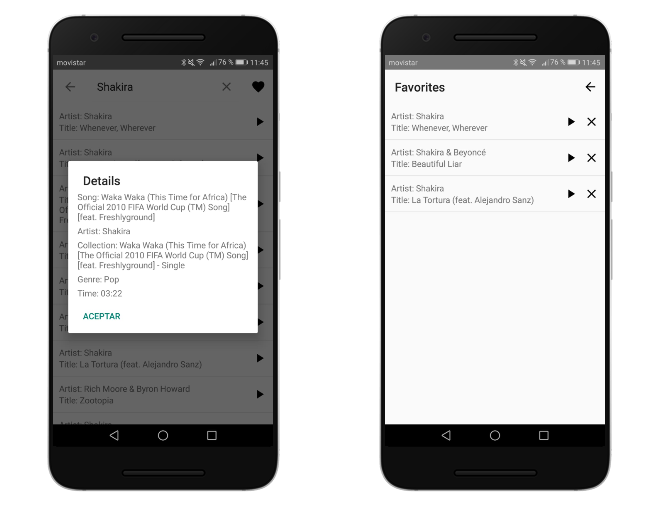

iTunes Serach And Play


Description
With this native Android application, one can look up songs from iTunes and reproduce the preview of them. Clicking on a song, one can see all the details of a song or add them to a favorites list.Motivation
This app was developed by myself due to a job application. Because I have learned important concepts during this process, I put it into my portfolio to show of these skills.What I learned
- Fetching data from a webserver with a REST API
- Using Retrofit library for this functionality
- Using Gson Library for JSON <-> POJO conversion
- Using MediaPlayer class to play audio